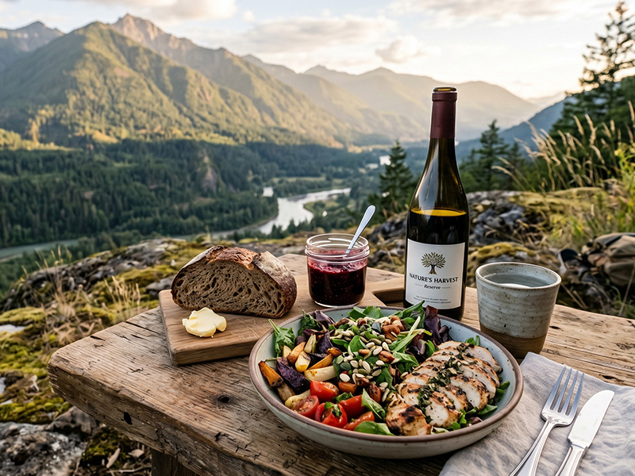
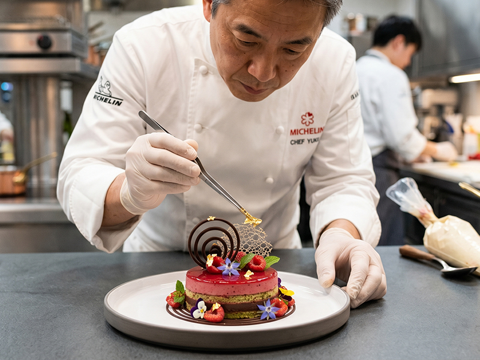
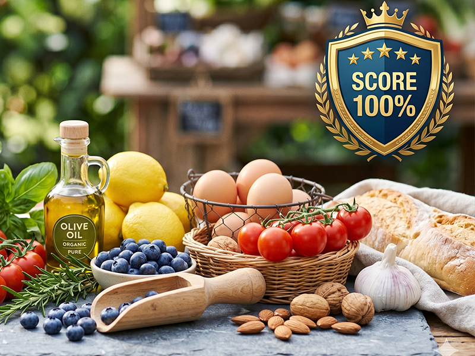

Truly exceptional food products with unique geographic terroir and traditional craftsmanship should never be undervalued on commodity shelves. We help visionary food brands break into the global luxury dining network, building premium brand equity and industry standing. Produtos alimenticios verdadeiramente excepcionais com terroir geografico unico e artesanato tradicional nunca devem ser subvalorizados em prateleiras de commodities. Ajudamos marcas visionarias a ingressar na rede global de gastronomia de luxo, construindo valor premium e posicao no setor.
Every choice we make is guided by these three noble principles Cada escolha que fazemos e guiada por estes tres nobres principios

We believe great flavour is sculpted by nature. THE PALATE protects and champions non-replicable foods born from unique climate, soil, and altitude — rejecting mass-produced industrial imitations. Acreditamos que grandes sabores sao esculpidos pela natureza. A THE PALATE protege e promove alimentos nao replicaveis nascidos de clima, solo e altitude unicos — rejeitando imitacoes industriais em massa.

We honour family workshops passed down through generations and food geeks pioneering technology. Hand-fermentation, cold-press, slow-drying — near-luxurious obsessions deserve commercial respect on the modern table. Honramos oficinas familiares transmitidas por geracoes e geeks da alimentacao que inovam com tecnologia. Fermentacao artesanal, prensagem a frio, secagem lenta — obsessoes quase luxuosas merecem respeito comercial na mesa moderna.

We pursue extreme fairness and traceability. We optimise every link from soil to star kitchen — ensuring fair returns for producers and 100% pure, safe ingredients for chefs. Buscamos justica extrema e rastreabilidade. Otimizamos cada elo do solo a cozinha estrelada — garantindo retorno justo para produtores e ingredientes 100% puros para chefs.
Bypass traditional supply chains. Connect your brand directly with Michelin-starred chefs, luxury hotel F&B directors, and key decision-makers in the premium dining ecosystem. Elimine cadeias de suprimentos tradicionais. Conecte sua marca diretamente a chefs estrelados, diretores de alimentacao de hoteis de luxo e tomadores de decisao no ecossistema gastronomico premium.
Reject homogenised selling points. We translate your product's heritage and tasting profile into compelling "flavour stories" that make your brand an essential tool for chef creativity. Rejeite pontos de venda homogeneizados. Traduzimos a heranca e o perfil de degustacao do seu produto em "historias de sabor" convincentes que tornam sua marca essencial para a criatividade do chef.
Escape price wars. Channel your products into curated tastings, haute couture private dinners, and avant-garde kitchens, building an unbreachable distribution fortress. Escape das guerras de preco. Direcione seus produtos para degustacoes selecionadas, jantares privados de alta costura e cozinhas de vanguarda, construindo uma fortaleza de distribuicao inexpugnavel.
As a globally responsible food curation institution, THE PALATE dedicates 5% of annual operating profits to "The Flavor Ark" charity fund. This fund supports micro-traditional farms and artisanal food makers worldwide who risk extinction due to climate change or generational labour loss. Como instituicao de curadoria alimentar globalmente responsavel, a THE PALATE dedica 5% do lucro operacional anual ao fundo beneficente "Arca do Sabor". Este fundo apoia micro-fazendas tradicionais e produtores artesanais em risco de extincao devido as mudancas climaticas ou perda de mao de obra geracional.
From endangered wild spices in the Andes to ancient beehive cheeses on Mediterranean islands, we deploy technology upgrades, logistics subsidies, and commercial connections to preserve biodiversity and the world's most precious sensory heritage. De especiarias selvagens ameacadas nos Andes a queijos antigos de colmeia em ilhas mediterraneas, implementamos atualizacoes tecnologicas, subsidios logisticos e conexoes comerciais para preservar a biodiversidade e a heranca sensorial mais preciosa do mundo.
Submit product samples for multi-dimensional blind tasting by our expert panel. Envie amostras para degustacao cega multidimensional pelo nosso painel de especialistas.
Translate your brand story into luxury dining language with independent designers and copywriters. Traduza sua historia de marca para a linguagem da gastronomia de luxo com designers e redatores independentes.
Targeted distribution to star chefs for real-world recipe R&D in their kitchens. Distribuicao direcionada a chefs estrelados para P&D de receitas reais em suas cozinhas.
Official listing in our premium sourcing directory and commence delivery to star restaurants and luxury retail. Listagem oficial em nosso diretorio premium e inicio da entrega a restaurantes estrelados e varejo de luxo.